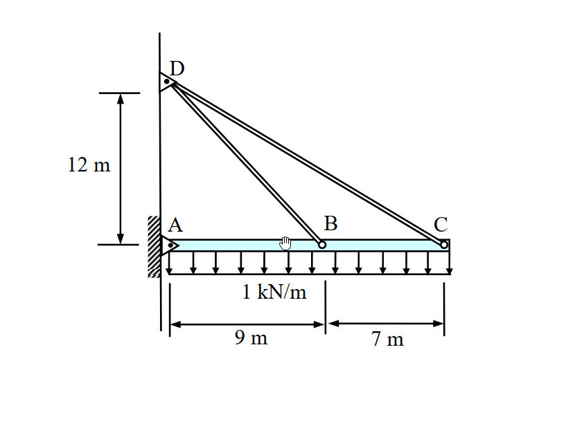
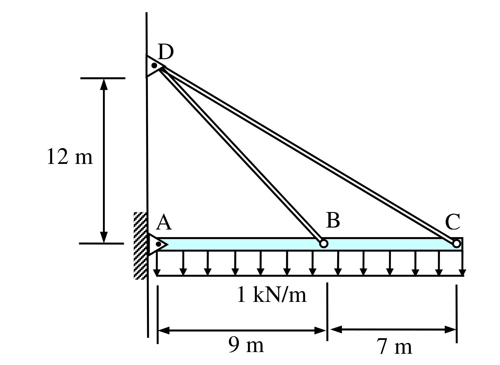
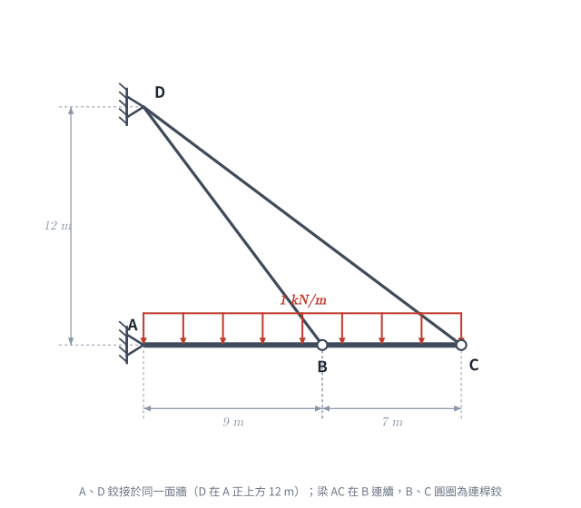
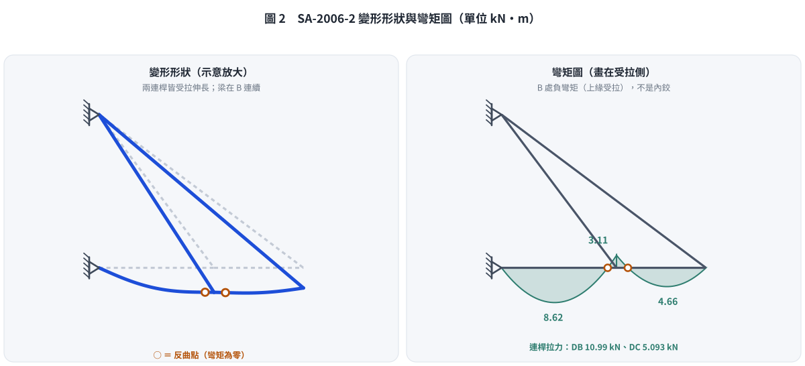

📄 題目正本（考卷原文、附圖與判讀清單；不含解法）
SA-2006-2 題目正本
本檔只記錄考卷上寫了什麼、圖上畫了什麼，不含任何解法。解析見同資料夾
SA-2006-2.md。
判讀清單經使用者確認前，狀態為「待確認」；確認後本檔原則上不再修改（改動須回考卷原圖並記 log）。
| 項目 | 內容 |
|---|---|
| 考卷 | raw/exams/SA-2006_結構學.pdf，第 1 頁（正面），第二題（無圖號） |
| 考年 | 2006（民國 95 年）專技高考結構工程技師「結構學」 |
| 配分 | 25 分 |
| 附圖 | SA-2006-2-fig-1.png、SA-2006-2-fig-2.png |
| 判讀狀態 | 已確認（2026-11-07 使用者確認；原轉錄：2026-11-07 轉錄；PyMuPDF 110 dpi 整頁＋400–1200 dpi 局部放大；PDF 向量座標；盲讀於開啟解析前完成） |
1. 考卷原文（逐字）
二、如圖所示之結構受垂直均佈載重1 kN/m 之作用，試計算連桿（linkage）DB 與DC 之張力。圖中AC 為梁構件，A、B、C、D 點均為鉸接（hinge）。假設橫梁之EI = 1 kN-m²，連桿之AE = 1 kN，其中E 為構件之彈性模數，I 為斷面慣性矩，A 為斷面積。不計構件之自重與AC 構件之軸向變形，亦不計梁之深度。（25 分）
2. 考卷給的公式、附表與參數
- 考卷沒有給任何參考公式或附表。
- 給定：橫梁 EI＝1 kN-m²；連桿 AE＝1 kN（兩根連桿相同）；不計自重、不計 AC 軸向變形、不計梁深。
- 考卷沒有說連桿 DB、DC 的 AE 是否不同（只寫「連桿之 AE＝1 kN」，視為兩桿相同）。
- 卷首注意事項：㈠可以使用電子計算器。㈡不必抄題，作答時請將試題題號及答案依照順序寫在試卷上，於本試題上作答者，不予計分。
- 考試時間：2 小時。
3. 附圖

證據圖 SA-2006-2-fig-1.png

證據圖 SA-2006-2-fig-2.png（2026-11-07 自考卷重新擷取 500 dpi，無游標）
圖面文字照錄：D、12 m、A、B、C、1 kN/m、9 m、7 m
4. 判讀清單
| # | 項目 | 判讀 | 圖上／題文依據 | 把握 |
|---|---|---|---|---|
| 1 | A | 鉸支承於左側直立牆（三角形尖端朝梁，內有圓點） | 400 dpi 放大；題文「A…為鉸接」 | 確定 |
| 2 | D | 鉸支承於同一面牆，位於 A 正上方 | PDF 座標：D 鉸中心 x＝294.8、A 鉸中心 x＝296.9（pt） | 確定 |
| 3 | B、C | 連桿與梁的鉸接點（小空心圓）；梁 AC 在 B 處連續（非梁內鉸） | B 圓圈畫在梁上，題文「AC 為梁構件」；若 B 為梁內鉸則結構靜定，與題給 EI、AE 求張力不合 | 確定（解讀）；使用者確認 |
| 4 | 尺寸 9 m、7 m | A→B 9 m、B→C 7 m，梁全長 16 m；尺寸線端點對齊 A 鉸、B 圓圈、C 圓圈 | PDF 座標：尺寸界線 x＝296.5、383.1、449.1；圓心 296.9、381.3、449.2 | 確定 |
| 5 | 尺寸 12 m | D 在梁軸（A）上方 12 m | PDF 座標：上界線 y＝688.0、D 鉸心 y＝681.5；下界線 y＝772.5、A 鉸心 y＝772.8。上界線略低於 D，圖面非按比例 | 確定（解讀）；使用者確認 |
| 6 | 梁 AC | 水平，EI＝1 kN-m²，不計軸向變形；梁右端延伸到 C（略超出 C 圓圈為繪圖外框） | 題文；圖面 | 確定 |
| 7 | 連桿 | DB、DC 為二力桿，AE＝1 kN | 題文 | 確定 |
| 8 | 載重 | 垂直向下均佈 1 kN/m，作用 A 至 C 全長 | 箭頭自 A（x＝296）排到 C（x＝452） | 確定 |
| 9 | 所求 | 連桿 DB、DC 的張力 | 題文 | 確定 |
| 10 | 靜不定度 | A 鉸 2＋兩連桿各 1＝4 個未知力，方程式 3，一度靜不定 | 計數 | 確定（解讀）；使用者確認 |
| 11 | 證據圖 | 舊 fig-1 滑鼠游標壓在梁 A–B 段（易誤看成梁上另一個點或鉸）；新增 fig-2（500 dpi，無游標） | — | 確定 |
轉錄：2026-11-07（SA-U2-2 題目正本推廣・批 1）
確認：2026-11-07 使用者確認
考題編號：SA-2006-2
主分類： SA-U2-2 結構分析法（力法與位移法）
副分類： 無
分析法： 諧合變位法 / 單位力法
標籤： 靜不定結構, 複合結構, 連桿, 虛功原理, 彈性支承
1. 題目（考卷原文見題目正本）
考卷原文、公式／附表、附圖與判讀清單（已確認）見
SA-2006-2-problem.md。本節只列解題時最容易讀錯的地方與本解使用的記號；題意以題目正本為準。

重繪自考卷附圖，依判讀清單重繪。攔：B 讀成梁內鉸（變靜定）、D 不在 A 正上方、均佈只算到 B。
常見誤讀
| 項目 | 正確判讀 | 常見誤讀 |
|---|---|---|
| D 位置 | A 正上方 12 m，與 A 同一面牆 | D 在 B 或 C 上方 |
| B 點 | 連桿鉸，梁 AC 在 B 連續（一度靜不定） | 梁內鉸（結構變靜定） |
| 載重 | 1 kN/m 作用 A 至 C 全長 | 只作用 AB 段 |
本解記號： DB 長 15 m（sin = 0.8）、DC 長 20 m（sin = 0.6）；EI = 1 kN-m²、AE = 1 kN；贅力 X＝V_C（DC 對梁 C 點的垂直分力，向上）；連桿張力以拉為正；位移向下為正。
2. 考題核心精神與出題者意圖 (Core Concepts & Examiner's Intent)
- 複合結構分析：測驗考生處理結合「受彎梁」與「受軸向力桿件（桁架）」的混合結構能力。
- 彈性支承概念：連桿 DB 與 DC 實際上可視為梁的兩個「彈性支承（彈簧）」，其勁度由連桿的軸向剛度（$AE/L$）及幾何角度決定。
- 靜不定度與力法：本結構為一次靜不定。出題者刻意給定極端的剛度數值（$EI=1, AE=1$），旨在測驗考生是否能精確列出並計算包含彎曲應變能與軸向應變能的虛功方程式。
3. 解題戰略地圖與陷阱分析 (Strategic Roadmap & Trap Analysis)
-
戰略一：選定一次靜不定之基本結構
將連桿 DC 視為贅員（Redundant），解除 C 點的垂直束制。基本結構變為：鉸接於 A 點、由「彈性」連桿 DB 支撐的懸挑梁 AC。 -
戰略二：虛功原理（單位力法）計算變位
計算基本結構在均佈載重 $w$ 作用下 C 點的垂直位移 $\Delta_{C0}$，以及在 C 點施加單位向上載重時的柔度係數 $f_{CC}$。計算虛功時，必須同時包含梁的彎矩變形與連桿 DB 的軸向伸長。 -
戰略三：建立諧合方程式
C 點的總位移必須等於連桿 DC 因張力伸長所允許的垂直位移。由此解出贅力 $V_C$（即連桿 DC 提供的垂直向上拉力）。 -
陷阱分析：
- 忽略連桿的幾何角度：連桿的伸長量 $\delta$ 與梁的垂直位移 $\Delta$ 之間存在幾何關係（$\delta = \Delta \sin \theta$），若直接將兩者畫上等號會導致嚴重錯誤。
- 遺漏 DB 桿的變形能：若將 B 點誤視為剛性支承而只算梁的變形，將遺失 DB 桿伸長對 C 點位移的放大效應。
- 計算繁瑣的積分：建議將梁分為 AB 與 BC 兩段，將座標原點分別設於 A 與 C 點，可大幅簡化彎矩函數的積分。
3.5 變數層次分析 (Variable Hierarchy Analysis)
最終目標
透過單位力法與位移諧合條件，解出一次靜不定結構的贅力，進而求得兩連桿的張力。
本題關鍵公式（依計算順序）
$$V_{B0} = \frac{w L_{AC}^2}{2 L_{AB}}$$
(1) 基本結構在外力 $w$ 作用下，由力矩平衡求 B 點連桿的垂直反力
$$v_{B} = - \frac{L_{AC}}{L_{AB}}$$
(2) 基本結構在 C 點受單位向上力作用下，B 點連桿的垂直反力
$$\Delta_{C0} = \int \frac{M_0 m}{EI} dx + \frac{T_{B0} t_B L_B}{AE}$$
(3) 單位力法求基本結構 C 點因原載重產生的向上位移（包含梁彎曲與 DB 軸向變形）
$$f_{CC} = \int \frac{m^2}{EI} dx + \frac{t_B^2 L_B}{AE}$$
(4) C 點向上單位力引起的 C 點向上位移（系統柔度係數）
$$f_{spring} = \frac{L_C}{AE \sin^2 \theta_C}$$
(5) 連桿 DC 等效於 C 點垂直彈簧的柔度係數
$$X = \frac{-\boxed{\Delta_{C0}}}{\boxed{f_{CC}} + \boxed{f_{spring}}}$$
(6) 諧合變位方程式解得贅力（C 點連桿的垂直向上分力）
$$T_C = \frac{\boxed{X}}{\sin \theta_C} \quad ; \quad T_B = \frac{V_{B0} + v_B \boxed{X}}{\sin \theta_B}$$
(7) 利用幾何關係將垂直分力轉換為連桿張力
L1：題目直接給定
| 符號 | 數值 | 說明 |
|---|---|---|
| $L_{AB}$ | $9 \text{ m}$ | 梁 AB 段長度 |
| $L_{BC}$ | $7 \text{ m}$ | 梁 BC 段長度 |
| $L_{AC}$ | $16 \text{ m}$ | 梁總長度 |
| $w$ | $1 \text{ kN/m}$ | 向下均佈載重 |
| $EI$ | $1 \text{ kN-m}^2$ | 梁之抗彎剛度 |
| $AE$ | $1 \text{ kN}$ | 連桿之軸向剛度 |
L2：需知識點推導
幾何與剛度轉換
| 符號 | 公式／來源 | 卡關? |
|---|---|---|
| $L_B$ | $\sqrt{12^2 + 9^2} = 15 \text{ m}$ | |
| $L_C$ | $\sqrt{12^2 + 16^2} = 20 \text{ m}$ | |
| $\sin \theta_B$ | $12 / 15 = 0.8$ | |
| $\sin \theta_C$ | $12 / 20 = 0.6$ | |
L3：深層知識（不懂就卡住）
| 知識點 | 說明 | 卡關? |
|---|---|---|
| 彈性支承的等效剛度 | 連桿傾斜時，其提供給梁的垂直勁度為 $k_v = (AE/L)\sin^2 \theta$。 | |
| 虛功法應變能組成 | 當基本結構包含連桿時，外力作功不僅轉化為梁的彎曲應變能，還包含基本結構中連桿的軸向應變能。 |
4. 步驟化詳細計算過程 (Step-by-Step Detailed Calculation)
Step 1：幾何參數與設定基本結構
- DB 桿長度：$L_B = \sqrt{12^2 + 9^2} = 15 \text{ m}$，角度 $\sin \theta_B = 12/15 = 0.8$。
- DC 桿長度：$L_C = \sqrt{12^2 + 16^2} = 20 \text{ m}$，角度 $\sin \theta_C = 12/20 = 0.6$。
- 選擇連桿 DC 提供的垂直向上拉力 $V_C$ 為贅力（令 $V_C = X$）。
- 基本結構：梁 AC 鉸支於 A 點，並由連桿 DB 懸吊支撐。
Step 2：真實系統（$w=1$ 作用於基本結構）分析
對 A 點取力矩平衡求 B 點向上分力 $V_{B0}$：
$$ \sum M_A = 0 \implies V_{B0}(9) - (1)(16)(8) = 0 \implies V_{B0} = \frac{128}{9} \text{ kN} $$
DB 桿張力 $T_{B0}$：
$$ T_{B0} = \frac{V_{B0}}{\sin \theta_B} = \frac{128/9}{0.8} = \frac{160}{9} \text{ kN} $$
梁彎矩 $M_0$ 函數：
-
AB 段（以 A 為原點，$0 \le x \le 9$）：A 點垂直反力 $V_{A0} = 16 - V_{B0} = 16/9$ (向上)。
$$ M_0(x) = \frac{16}{9}x - \frac{1}{2}x^2 $$ -
BC 段（以 C 為原點向左，$0 \le z \le 7$）：
$$ M_0(z) = -\frac{1}{2}z^2 $$
Step 3：虛擬系統（C 點施加單位向上載重 $X=1$）分析
對 A 點取力矩平衡求 B 點虛擬反力 $v_{B}$：
$$ \sum M_A = 0 \implies v_{B}(9) + (1)(16) = 0 \implies v_{B} = -\frac{16}{9} \text{ kN} \text{ (向下)} $$
DB 桿虛擬張力 $t_B$：
$$ t_B = \frac{v_B}{\sin \theta_B} = \frac{-16/9}{0.8} = -\frac{20}{9} \text{ kN} $$
梁虛擬彎矩 $m$ 函數：
-
AB 段（$0 \le x \le 9$）：$v_{A} = -1 - v_B = 7/9$ (向上)。
$$ m(x) = \frac{7}{9}x $$ -
BC 段（$0 \le z \le 7$）：
$$ m(z) = 1 \cdot z = z $$
Step 4：虛功法求變位 $\Delta_{C0}$ 與柔度係數 $f_{CC}$
令向上位移為正：
$$ \Delta_{C0} = \int \frac{M_0 m}{EI} dx + \frac{T_{B0} t_B L_B}{AE} $$
-
梁的積分（$EI=1$）：
$$ \int_0^9 \left( \frac{16}{9}x - \frac{1}{2}x^2 \right)\left( \frac{7}{9}x \right) dx + \int_0^7 \left( -\frac{1}{2}z^2 \right)(z) dz $$
$$ = \left[ \frac{112}{81}\frac{x^3}{3} - \frac{7}{18}\frac{x^4}{4} \right]_0^9 + \left[ -\frac{z^4}{8} \right]_0^7 = (336 - 637.875) - 300.125 = -602 $$ -
桿件 DB：
$$ \frac{(160/9)(-20/9)(15)}{1} = -\frac{16000}{27} \approx -592.59 $$
$$ \Delta_{C0} = -602 - \frac{16000}{27} = -\frac{16254 + 16000}{27} = -\frac{32254}{27} \text{ (即向下 )} $$
柔度係數 $f_{CC}$：
$$ f_{CC} = \int \frac{m^2}{EI} dx + \frac{t_B^2 L_B}{AE} $$
-
梁的積分：
$$ \int_0^9 \left( \frac{7}{9}x \right)^2 dx + \int_0^7 z^2 dz = \frac{49}{81}\left( \frac{9^3}{3} \right) + \frac{7^3}{3} = 147 + \frac{343}{3} = \frac{784}{3} = \frac{7056}{27} $$ -
桿件 DB：
$$ \frac{(-20/9)^2(15)}{1} = \frac{400 \times 15}{81} = \frac{2000}{27} $$
$$ f_{CC} = \frac{7056 + 2000}{27} = \frac{9056}{27} $$
Step 5：諧合方程式解贅力
C 點之等效彈簧（連桿 DC）柔度係數：
$$ f_{spring} = \frac{L_C}{AE \sin^2 \theta_C} = \frac{20}{(1)(0.6^2)} = \frac{20}{0.36} = \frac{500}{9} = \frac{1500}{27} $$
諧合方程式：基本結構於 C 點的總向上變形 加上 贅力造成的變形，等於連桿 DC 伸長所對應的 C 點向下位移。
$$ \Delta_{C0} + X \cdot f_{CC} = -X \cdot f_{spring} $$
$$ X(f_{CC} + f_{spring}) = -\Delta_{C0} $$
$$ X \left( \frac{9056}{27} + \frac{1500}{27} \right) = \frac{32254}{27} $$
$$ X \left( \frac{10556}{27} \right) = \frac{32254}{27} \implies X = \frac{32254}{10556} = \frac{16127}{5278} \text{ kN} $$
故贅力 $V_C = \frac{16127}{5278} \text{ kN}$。
Step 6：計算 DB 與 DC 連桿張力
DC 桿張力：
$$ \boxed{T_C = \frac{V_C}{\sin \theta_C} = \frac{16127 / 5278}{0.6} = \frac{16127 \times 5}{5278 \times 3} = \frac{80635}{15834} \approx 5.093 \text{ kN (張力)}} $$
DB 桿張力：
先求 B 點向上垂直反力：
$$ V_B = V_{B0} + v_B \cdot X = \frac{128}{9} - \frac{16}{9} \left( \frac{16127}{5278} \right) = \frac{128(5278) - 16(16127)}{9(5278)} = \frac{675584 - 258032}{47502} $$
$$ V_B = \frac{417552}{47502} = \frac{208776}{23751} = \frac{69592}{7917} \text{ kN} $$
$$ \boxed{T_B = \frac{V_B}{\sin \theta_B} = \frac{69592 / 7917}{0.8} = \frac{69592 \times 5}{7917 \times 4} = \frac{17398 \times 5}{7917} = \frac{86990}{7917} \approx 10.988 \text{ kN (張力)}} $$

圖 2 變形形狀與彎矩圖（勁度法重算，兩根連桿拉力核對本解）。B 是連桿與梁的鉸接點，梁本身在 B 連續、可承受彎矩；這張圖攔的是「把 B 當梁內鉸」與「兩根連桿拉力對調」。
5. 關鍵爭議點與進階探討 (Critical Issues & Advanced Discussion)
- 卡式定理與虛功法的對等性：本題亦可全程使用最小功法（卡式第二定理）求解，即列出總應變能 $U = U_{beam} + U_{DB} + U_{DC}$，並令 $\frac{\partial U}{\partial V_C} = 0$。經由卡式定理推導出的偏微分方程式，其各項係數與上述單位力法算出的位移項（$\Delta_{C0}, f_{CC}$）將會完全一致。考場上選擇單位力法能更直觀地分段檢查變形量。
- 剛度比例的極端值：題目給定的 $EI = 1$ 與 $AE = 1$ 是極為罕見的比例（實務上鋼梁的 $AE$ 數值會遠大於 $EI$）。出題者如此設計是為了讓「彎曲變形」與「軸向變形」對總位移的貢獻在同一數量級上，以測驗考生是否會遺漏任何一項變形能。若在實務設計中，軸向變形通常微乎其微而被忽略。
修正日期：2026-11-07（§1 改為指向題目正本並放重繪附圖（figs/SA-2006-2-fig-1-problem.svg）、加常見誤讀；圖由 gen_SA-2006-2.py 產生，可重跑）
修正日期：2026-11-07（非勘誤）圖解補繪：圖 2（gen_SA-2006-2.py，可重跑）